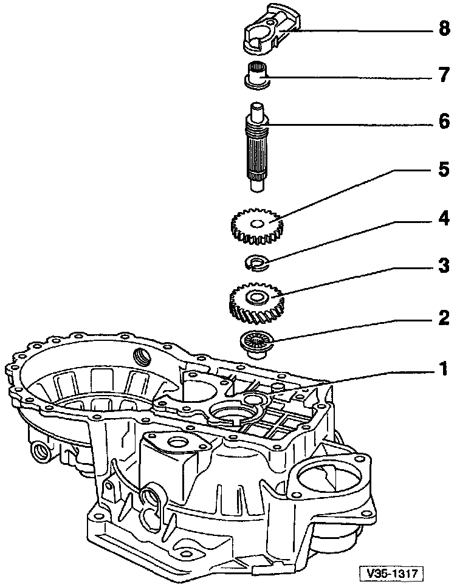
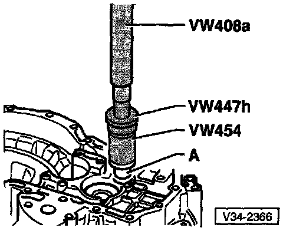
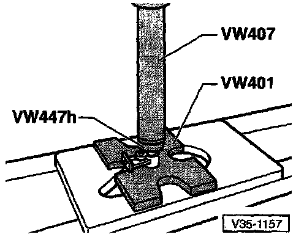

Reverse Gear Shaft: Service and Repair

1 - Clutch housing
2 - Needle roller bearing
3 - Reverse gear
4 - Circlip -- If removed, always replace
5 - Reverse sliding gear
^ Before replacing gear, remove circlip
^ Shoulder faces toward reverse gear (3)
6 - Reverse idler shaft
7 - Needle roller bearing
8 - Reverse idler shaft support
COMPONENT DISASSEMBLY-IDENTIFICATION-INSPECTION PROCEDURES
NOTE: The numbers in (parentheses) below, refer to the components key for the exploded image above. The components which require additional disassembly are listed below with a following procedure. The procedures are listed in the order the components are listed, and are not intended to be a sequential disassembly/assembly procedure.
(2) Needle roller bearing

Pulling needle roller bearing from clutch housing
- A = Counter support e.g. Kukko 22/1
- B = Internal extractor, 14.5-18.5 mm e.g. US 8028 or Kukko 12/2
NOTE: Bearing is destroyed during removal and must be replaced.

Pressing needle roller bearing into clutch housing
- A = Needle roller bearing
(6) Reverse idler shaft
(7) Needle roller bearing

Pressing needle roller bearing out of reverse idler shaft support

Pressing needle roller bearing into reverse idler shaft support